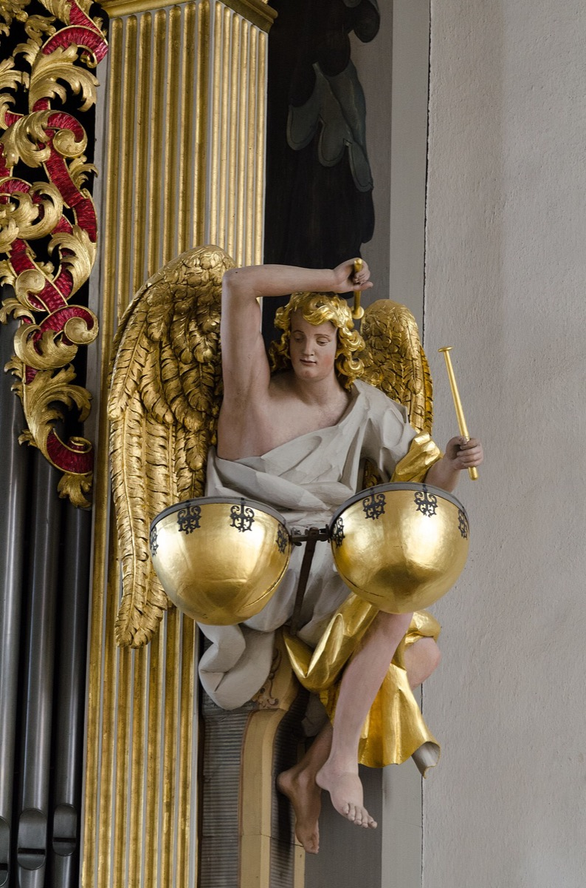

The Orgelbüchlein: 164 planned, 46 written, all essential

Sometime in the mid-Weimar years Bach sat down with a blank manuscript book and ruled out a cathedral. He laid in 164 chorale titles, one opening of the book for each, spanning the entire church year from Advent to the last Sundays after Trinity — a complete liturgical organ companion, planned in advance the way an architect draws an elevation before a single stone is cut. Then he began to fill it. He completed 46 of the planned pieces before the project, like several of his grandest schemes, was overtaken by life — the duties changed, the job changed, the book traveled on with him unfinished — and the empty ruled pages of the surviving autograph are among the most eloquent blanks in music: 118 titles standing at the head of staves that never received their notes, a visible inventory of what one working life did not have time for.
But to dwell on the blanks is to undersell what the finished pages contain, which is the chorale prelude perfected as a miniature form. The recipe is strict, and its strictness is the achievement. Each hymn tune is presented once through, unadorned or lightly ornamented, while the accompaniment is woven from a single musical figure sustained from first bar to last — and the figure, in piece after piece, is chosen as interpretation, a reading of the hymn's text executed in pure pattern. Falling chromatic lines writhe beneath the chorale on the Fall of Adam; a walking bass of serene, unbroken tread carries the hymn of trust in God; and in the ornamented masterpieces the melody itself dissolves into grief-laden arabesque — O Mensch, bewein above all, a meditation Bach valued enough to rebuild, in another form, as the great frame closing the first part of the St. Matthew Passion. Each prelude is a single exegetical decision, sustained for a page. Schweitzer built his whole pictorial theory of Bach — the composer as painter of texts, with a lexicon of grief motives and joy motives — on this book, and if he overreached, it must be said in his defense that the book invited it.
The title page arrived last, and from another era of the composer's life. At Cöthen, where a Calvinist court had no use for chorale preludes, Bach repurposed the unfinished book for teaching and gave it a title page bearing a rhymed couplet — the timeline's second great mission statement, after the Mühlhausen Endzweck: Dem höchsten Gott allein zu Ehren, dem Nächsten, draus sich zu belehren — "In honor of the most high God alone; for the neighbor, that he may instruct himself from it." Worship and pedagogy, declared as one purpose on one page. It is the same double creed the era essay finds at the heart of the whole Weimar decade, and the fact that Bach articulated it retrospectively, when the book's liturgical occasion was gone and only its teaching value remained, suggests the couplet was not decoration but genuine self-description: this, looking back, is what he understood the book to be for.
The card matters twice, once to the Craft section and once to the biography. For the Craft section it is the chorale-as-classroom essay's primary exhibit: maximum expressive theology at minimum scale, one technique per piece, each prelude isolating a single device the way a well-built exercise isolates a muscle — Bach teaching exactly the way his own Inventions title page would later promise, by giving the learner short, perfect specimens to inhabit rather than rules to memorize. That the specimens double as some of the most concentrated sacred music ever written is the Bach signature: the pedagogy and the art are not two layers, they are one substance. And biographically, the planned-164 grid deserves a long look, because it is the encyclopedic instinct's first full blueprint — the urge to survey a whole domain systematically, to build the complete set rather than the successful piece, visible here a decade before the Well-Tempered Clavier and decades before the Art of Fugue. The mature Bach of the great cycles is already present in this ruled and half-filled book: the ambition total, the plan exhaustive, the execution — because he was mortal and employed — forty-six pages of the way there.
Continue with the era essay: Weimar: the organ decade and the Italian conversion, or go deeper into the book itself: the Orgelbüchlein.
Autograph of the Orgelbüchlein (Bach Digital)
Wolff, The Learned Musician, ch. 6
→ full bibliography & links